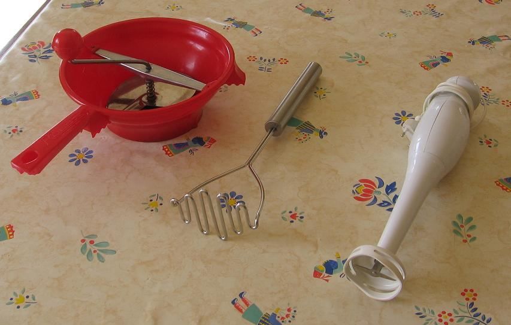

Recette n° 60 :
Soupe de poireaux et de pommes
de terre comme la faisait Mémé de Laval
On peut s'interroger sur l'intérêt d'une recette
aussi banale qu celle d'une soupe de poireaux et de pommes de terre...
Et pourtant, en regardant la question de plus près, on verra
qu'on peut raffiner facilement cette recette de base, ne serait-ce
qu'en adoptant une de ses quatre variantes plutôt qu'une autre,
en mettant du bouillon plutôt que de l'eau, en faisant revenir le
poireau, en gardant beaucoup de son vert, en complétant par du
fromage, en servant en petites soupières, etc. laissez vous
tenter...

Ingrédients : (pour 6 personnes)
- 2 litres de bouillon de poule, de préférence
fait maison (cf. observation 1 ci-dessous), ou d'eau à
défaut de bouillon mais c'est moins bon
- 12 pommes de terre de taille moyenne
- 6 poireaux moyens entiers (avec leurs feuilles vertes)
- une cuiller à soupe de beurre, ou à défaut de
margarine ou d'huile mais c'est moins bon
Préparation :
- préparer les poireaux en en conservant le maximum de feuilles
vertes : couper les extrémités abîmées, puis
fendre le poireau en deux dans le sens de la longueur, rincer chaque
brin obtenu en en enlevant que le strict minimum, puis ciseler en
morceaux de 1 cm de long environ
- mettre à revenir les morceaux de poireau dans une sauteuse
avec le beurre en remuant sans cesse jusqu'à ce que les poireaux
soient devenus transparents sans les laisser brûler (le beurre
non plus ne doit surtout pas noircir)
- couvrir les poireaux avec du bouillon et laisser mijoter à feu
moyen, en ajoutant du bouillon en cours de cuisson (les poireaux
doivent toujours baigner)
- éplucher les pommes de terre et les débiter en lamelles
de 2 à 4 mm d'épaisseur, joindre ces lamelles au fur et
à mesure au contenu de la sauteuse
- quand toutes les pommes de terre ont été
débitées, transvaser le tout de la sauteuse dans une
casserole ou une cocotte en adjoignant le reste du bouillon et laisser
mijoter à feu moyen jusqu'à ce que les pommes de terre
soient cuites (ne pas hésiter à laisser plus longtemps
mais à feu doux car, plus cela mijote, meilleur c'est)
- saler et poivrer selan goût mais attention car le bouillon de
poule est déjà très salé
- opter en fin de cuisson pour l'une des 4 variantes suivantes (cf.
photo ci-dessus), selon que les convives préfèrent la
soupe très lisse, légèrement granulée,
à peine écrasée, carrément non
écrasée :
- soupe
très lisse : passer le tout au mixer électrique
à potage
- soupe
légèrement granulée : passer au moulin
à manivelle comme pour une purée
- soupe
à peine écrasée : passer au pilon à
pommes de terre
- soupe
carrément non écrasée : laisser la soupe
telle quelle
- servir la soupe très chaude (attention, s'il y a des enfants,
on peut refroidir en les laissant ajouter du lait : cela les amusera),
avec à disposition des convives des croûtons, de la
crème fraîche, éventuellement des dés de
fromage (Vache-qui-rit pour les jeunes, camembert, emmenthal,
râpé,etc.)
- le nec plus ultra : servir en petites soupières individuelles
avec une branche de persil plat ou de cerfeuil ou de coriandre selon
goût
Observations :
1 - on peut bien sûr faire le bouillon à partir de
tablettes, mais c'est bien meilleur quand il provient par exemple d'une
carcasse de poulet rôti qu'on a mise à mijoter quelques
heures dans l'eau et dont on a filtré ensuite le jus
2 - recette exécutée un très grand nombre de fois,
toujours appréciée, des petits comme des grands